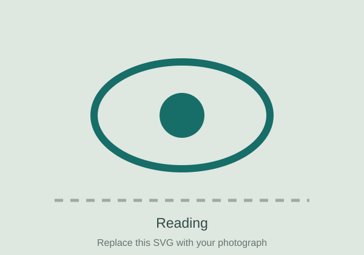

Eye movements during reading
Fixation timing, saccade targeting, multiline reading, return-sweep saccades and lexical influences on visual selection.
Read more
We study how readers decide where and when to move their eyes, and how linguistic information is integrated across successive fixations.
Current themes: return-sweep targeting, parafoveal processing, word-frequency effects, oral reading, and individual differences in reading behaviour.